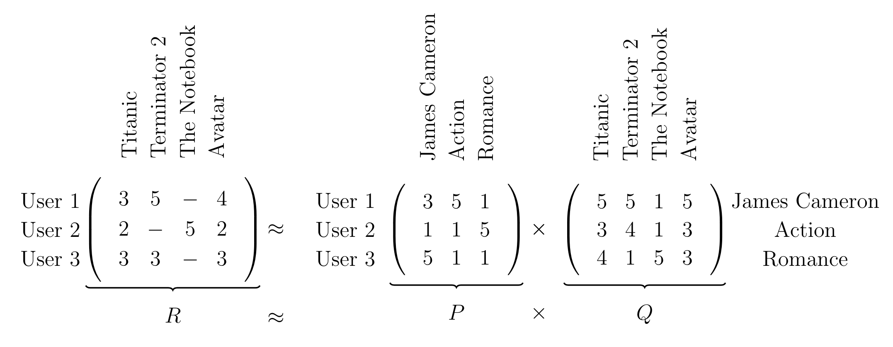
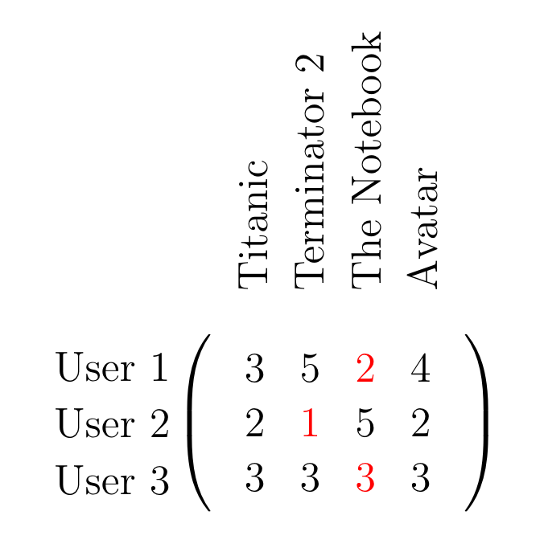

Non-Negative Matrix Factorization
What Shall We Recommend?

Non-Negative Matrix Factorization
Recently while I was browsing reddit, an article was linked about the Netflix challenge from the late 2000’s. It sparked my interest and it was a nice article to read. Back then large-scale machine learning was still hampered through the lack of big data sets but when Netflix dumped a large recommendation data set onto the internet a lot of people went wild.
It had been the first time that such a large data set with millions of data points had been published. And this wasn’t just some obscure data set but real-world data from a major tech company itself. Back then Netflix proclaimed that the first group/person to develop a recommendation system which would be 10\% better than their own would get a million dollars.
A method that has been popping up repeatedly with the Netflix challenge has been non-negative matrix factorization (NMF). I always made a big detour around the topic since it sounded complicated and but after the article I became interested in it and as it turns out, NMF isn’t too hard to understand.
It all starts with the aim to factorize the matrix $R \in \mathbb{R}^{U \times I}$ into two smaller matrices $P \in \mathbb{R}^{U \times K}$ and $Q \in \mathbb{R}^{K \times I}$, such that their matrix product is approximately the original matrix $R$,
\[R \approx P \ Q = \hat{R}.\]The approximation results from the fact that we want the dimension $K$ to be somewhat or significantly smaller than either $U$ or $I$, namely $K \ll U, I$.
Why do we want this? Well foremost to find some latent structure in the matrix which allows us to compress the information in $R$ into two smaller matrices $U, I$ with only little loss in information.
The idea is very similar to auto-encoders which use a reduced dimensionality in their middle to find a meaningful, but more compact representation of the original data. Another example would be the well-known PCA which uses the data’s principal components (directions in the data space which exhibit the highest variance) to project the data itself into a subspace which is lower dimensional and more meaningful.

In the example above we factorize the matrix $R \in \mathbb{R}^{3 \times 4}$ into two matrices $P \in \mathbb{R}^{3 \times 3}, Q \in \mathbb{R}^{3 \times 4}$ which share the common latent dimensionality $K=3$. The latent factors correspond to the latent information which we can discover between the movies and what movies the users liked. In our case the latent factors are ‘James Cameron’, ‘Action’ and ‘Romantic’.
The important intuition is that the column vectors of $P$ represent the strength of association between users and latent factors and the row vectors of $Q$ represent the strength of association between the movies and the latent factors.
In the matrix ‘P’ we can see that ‘User 1’ reacts normally to ‘James Cameron’, strongly to ‘Action’ and weakly to ‘Romance’. ‘User 2’ only reacts strongly to ‘Romance’ and doesn’t care much about either ‘James Cameron’ or ‘Action’. The final ‘User 3’ on the other hand reacts strongly to ‘James Cameron’ and weakly to both ‘Action’ and ‘Romance’.
In matrix $Q$ there also some information. Obviously ‘James Cameron’ reacts strongly to ‘Titanic’, ‘Terminator 2’ and ‘Avatar’ since he’s the director of all three movies. The latent factor ‘Romance’ reacts somewhat strongly to ‘Titanic’ and very strongly to ‘The Notebook’.
Once we have the full factorization, we can use both matrices to fill in the missing values. Because ‘User 1’ reacts strongly to ‘Action’, he will probably only react somewhat weakly to ‘The Notebook’. Since ‘User 2’ favours ‘Romance’ above all else, the probable review of ‘Terminator 2’ will be very weak. Better not recommend it to the user! ‘User 3’ could react normally to ‘The Notebook’ since he doesn’t care too much about any specific latent factor.
The infilling, or imputation, is made possible by computing the two factorized matrices $P$ and $Q$ from all observed data points in the data matrix $R$ and subsequently generalizing to the unseen data points.

We’ve seen above that we can determine clear preferences of the users. Instead of encoding the preferences of the users implicitly in $P$ we can encode them explicitly with biases. By using biases we can let $P$ concentrate on finding strong weights with the items and offload the user preference onto the biases. For each user there will be a bias which we can aggregate into a vector $u \in \mathbb{R}^{U}$. Similarly we will introduce a bias for each movie in a vector $i \in \mathbb{R}^{I}$. And for good measure we’ll include a overall scalar bias $b \in \mathbb{R}$. Since these are vectors and we want to compute matrices, it’s easier to write down the full reconstruction of the matrix $R$ element-wise:
\begin{align} R_{ui} \approx \sum_{k=0}^K P_{uk} Q_{ki} + u_u + i_i + b = \hat{R}_{ui} \end{align}
The above example is a made-up example which doesn’t correspond to a true factorization. I only created it to demonstrate the core idea of NMF. In reality we would have to infer the names of the latent factors by looking at the data. Furthermore the values aren’t integer values like above but float values.
Surprisingly, NMF is not hard to implement when using gradient descent. As we are living in the age of automatic differentiation frameworks implementing NMF is a breeze.
The recipe to obtain a full factorization is quite easy:
- Initialize $P, Q, u, i$ and $b$ randomly and positively
- Compute $\hat{R}$ and compute a loss to $R$
- Take the gradient of the loss w.r.t. all entries in $P, Q, u, i$ and $b$ and do a gradient descent step
- Repeat until converged
There are two approaches how we can compute the loss. We could iterate through all existing data points in $R$ individually and compute the loss between $R_{ui}$ and $\hat{R}_{ui}$. Alternatively we can compute the loss between $R$ and $\hat{R}$ directly and we have to pay attention on what entries we compute the loss. The latter approach can easily be accomplished with a mask of zeros and ones which eliminates the unknown entries in $R$ from the loss function.
Let’s jump into some code!
import numpy as np
import torch
FloatTensor = torch.FloatTensor
class NMF(torch.nn.Module):
def __init__(self, R, K, lr, iterations):
'''
:param R: The recommendation matrix in which we want to fill in missing values
:param K: The number of latent factors
:param lr: The learning rate for the gradient descent
:param iterations: The number of iterations of gradient descent
:param zero_mask: The zero mask for the full matrix update
'''
super().__init__()
self.R = R
self.zero_mask = torch.zeros_like(R)
self.zero_mask[R!=0] = 1
self.num_users, self.num_items = R.shape
self.K = K
self.lr = lr
self.iterations = iterations
# We'll use an exponential function to initialize the values since it's support is in R^+
exponential_dist_lambda = 5
# Initialize the P and Q matrices
self.P = torch.nn.Parameter(FloatTensor(self.num_users, self.K).exponential_(exponential_dist_lambda))
self.Q = torch.nn.Parameter(FloatTensor(self.num_items, self.K).exponential_(exponential_dist_lambda))
# Initialize the biases
self.b_u = torch.nn.Parameter(FloatTensor(self.num_users, 1).exponential_(exponential_dist_lambda))
self.b_i = torch.nn.Parameter(FloatTensor(self.num_items, 1).exponential_(exponential_dist_lambda))
self.b = torch.nn.Parameter(FloatTensor([[0.1]]))
# Criterion and optimizer for the gradient descent
self.criterion = torch.nn.MSELoss()
self.optim = torch.optim.Adam(self.parameters(), lr=self.lr)
# Generate the training data from the existing data points in R
self.samples = [(i, j, self.R[i,j]) for i in range(self.num_users) for j in range(self.num_items) if R[i,j]>0]
np.random.shuffle(self.samples)
# Define entry-wise or full-matrix-wise updates ... Hint: Full matrix converges faster
self.forward_type = 1
def forward(self, _u, _i):
'''
Elementwise prediction of the data matrix
:param _u: The user
:param _i: The item
:return: \hat{R}_{ui}, the predicted rating through the parameters
'''
prediction = self.b + self.b_u[_u]
prediction += self.b_i[_i]
prediction += self.P[_u].dot(self.Q[_i])
return prediction
def forward_fullmatrix(self):
'''
Full matrix prediction where special care is given such that only the data point in the full prediction matrix are used for the loss
:return: Full R matrix
'''
prediction = torch.matmul(self.P, self.Q.t())
prediction += self.b + self.b_u
prediction += self.b_i.t()
# The points we want to predict are 0 in R, so the entries in the predicted matrx \hat{R} at the same position should also be zero
prediction *= self.zero_mask
return prediction
def train(self):
'''
Trusty old SGD: Predict \hat{R} -> Compute loss(R, \hat{R}) -> Update matrices and vectors with negative gradient
:return: Hopefully a converged recommendation matrix! ;-)
'''
for e in range(self.iterations):
loss_ = 0
for (i, j, r) in self.samples:
self.zero_grad()
if self.forward_type==1:
pred = self.forward_fullmatrix()
loss = self.criterion(pred, R)
elif self.forward_type==2:
pred = self.forward(i, j)
loss = self.criterion(pred, r)
loss.backward()
self.optim.step()
loss_+=loss.detach().numpy()
if (e+1) % 10 == 0:
print("Iteration: %d ; error = %.4f" % (e+1, loss_))
def full_matrix(self):
'''
Compute the full prediction \hat{R}
:return:
'''
return_ = torch.matmul(self.P, self.Q.t())
return_ += self.b_u
return_ += self.b_i.t()
return_ += self.b
return return_.detach()
R = np.array([ [5, 3, 0, 1],
[4, 0, 0, 5],
[1, 1, 0, 1],
[1, 0, 0, 1],
[0, 1, 5, 4],])
R = FloatTensor(R)
mf = NMF(R, K=3, lr=0.005, iterations=300)
mf.train()
print(mf.full_matrix())
I prefer to encapsulate my code in objects/Python classes. We initialize the NMF-Algorithm by defining all the relevant parameters and data matrices. Here we’re using an exponential distribution with a larger $\lambda$ to initialize $P, Q, u, i, b$ such that the their values and small and positive.
The classic additive NMF algorithm iterates through all existing data points in the data matrix and minimizes the mean squared error loss between the prediction and the true data matrix. I rewrote the gradient descent to compute the entire matrix in parallel and do one gradient descent step after evaluating the entire data matrix. In this case special attention has to be paid over which values the loss function is computed.
In the above example, unknown data points in $R$ were denoted with ‘0’. After predicting $\hat{R}$, we simply multiply the entries in $\hat{R}$ with 0 such that loss with respect to these unknown entries is zero.
self.zero_mask = torch.zeros_like(R)
self.zero_mask[R!=0] = 1
. . .
def forward_fullmatrix(self):
'''
Full matrix prediction where special care is given such that only the data point in the full prediction matrix are used for the loss
:return: Full R matrix
'''
prediction = torch.matmul(self.P, self.Q.t())
prediction += self.b + self.b_u
prediction += self.b_i.t()
# The points we want to predict are 0 in R, so the entries in the predicted matrx \hat{R} at the same position should also be zero
prediction *= self.zero_mask
return prediction
After converging on a set of parameters for the given recommendation matrix, we can use the existing parameters $Q, u, i, b$ to predict data on a new partially filled user vector $u^* \in \mathbb{R}^{1 \times k}$. All we have to do is to use the already existing codebook $Q$ and the biases $u, i, b$ and let the factorization for $p^* \in \mathbb{R}^{1 \times k}$ converge such that
\[u^*_i \approx \sum_{k=0}^K p^*_k Q_{ki} + u_i + i_i + b\]